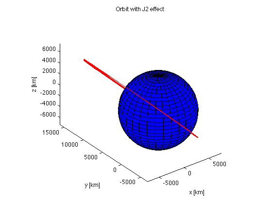
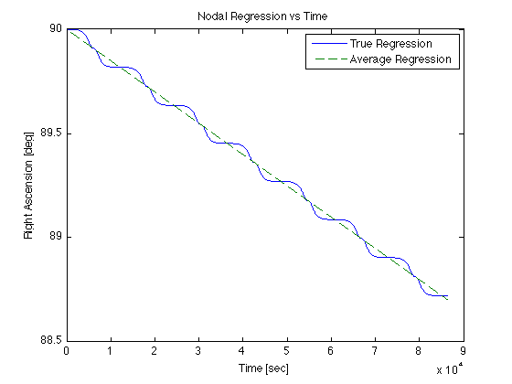
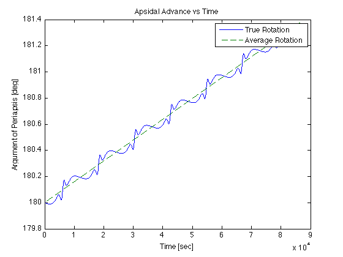
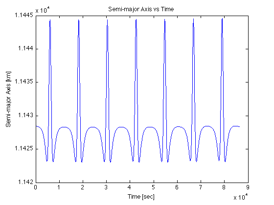
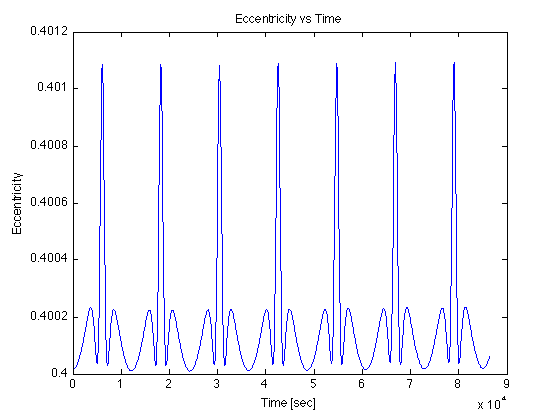
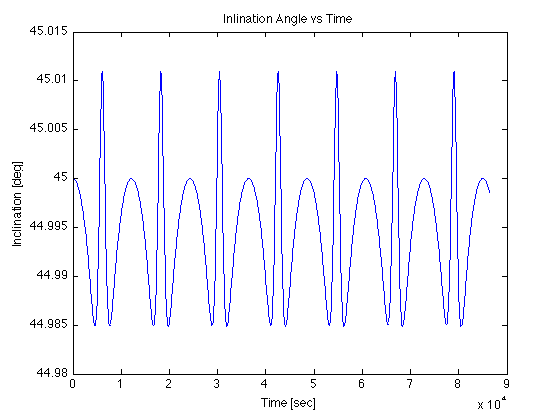

Contents
Hw8.2
close all; clear all; clc;
path(path,'Toolbox')
DU = 6378.137;
TU = 806.80415;
VU = DU/TU;
Part a.)
o_R_s__eci = [0 16000 0]';
eci_V_s__eci = [-2.7338 0 2.7338]';
[a ecc inc raan aop nu0 meanmotion M0] = ...
getOrbitalElements(o_R_s__eci/DU,eci_V_s__eci/VU);
a = a*DU;
meanmotion = meanmotion/TU;
disp(['Right Ascension = ' num2str(raan*180/pi) ' deg'])
disp(['Arg of Periapsis = ' num2str(aop*180/pi) ' deg'])
disp(['Semi-major Axis = ' num2str(a) ' km'])
disp(['Eccentricity = ' num2str(ecc) ' '])
disp(['Inclination = ' num2str(inc*180/pi) ' deg'])
Right Ascension = 90 deg
Arg of Periapsis = 180 deg
Semi-major Axis = 11428.4239 km
Eccentricity = 0.40002
Inclination = 45 deg
Part b.)
J2 = 1.0826e-3;
dRAANdt_avg = -(3*meanmotion*J2*cos(inc)/2)*(DU/(a*(1-ecc^2)))^2;
dAOPdt_avg = (3*meanmotion*J2/2) * (DU/(a*(1-ecc^2)))^2 * (2 - 5*sin(inc)^2/2);
raan_24hrs = raan + dRAANdt_avg*3600*24;
aop_24hrs = aop + dAOPdt_avg*3600*24;
disp(['Average Nodal Regression = ' num2str(dRAANdt_avg*180/pi) ' deg/sec'])
disp(['Average Apsidal Rotation = ' num2str(dAOPdt_avg*180/pi) ' deg/sec'])
disp(['Right Ascension + 24hrs = ' num2str(raan_24hrs*180/pi) ' deg'])
disp(['Arg of Periapsis + 24hrs = ' num2str(aop_24hrs*180/pi) ' deg'])
Average Nodal Regression = -1.5008e-05 deg/sec
Average Apsidal Rotation = 1.5919e-05 deg/sec
Right Ascension + 24hrs = 88.7033 deg
Arg of Periapsis + 24hrs = 181.3754 deg
Part c.) See function statedot_oblate
Part d.)
t_vec = 0:60:3600*24;
state0 = [o_R_s__eci; eci_V_s__eci];
options = odeset('RelTol', 1e-6, 'AbsTol', 1e-9);
[t_out, state] = ode113(@statedot_oblate, t_vec, state0, options);
O_r_S__eci = state(:,1:3);
[xeplot, yeplot, zeplot] = ellipsoid(0.0, 0.0, 0.0, ...
DU, DU, DU, 30);
figure(1)
surface(xeplot, yeplot, zeplot, 'FaceColor', 'blue', 'EdgeColor', 'black');
hold on;
plot3(O_r_S__eci(:,1), ...
O_r_S__eci(:,2), ...
O_r_S__eci(:,3), 'red');
view(3)
axis equal;
title('Orbit with J2 effect')
xlabel('x [km]')
ylabel('y [km]')
zlabel('z [km]')

Part e.)
eci_v_S__eci = state(:,4:6);
num_steps = length(t_vec);
OrbElements = zeros(num_steps,8);
for i=1:num_steps
[a ecc inc raan aop nu0 meanmotion M0] = ...
getOrbitalElements(O_r_S__eci(i,:)/DU,eci_v_S__eci(i,:)/VU);
OrbElements(i,:) = [a ecc inc raan aop nu0 meanmotion M0];
end
Part f.)
linear_raan = OrbElements(1,4) + dRAANdt_avg.*t_vec;
figure(2)
plot(t_vec,OrbElements(:,4)*180/pi,t_vec,linear_raan*180/pi,'--')
legend('True Regression','Average Regression')
title('Nodal Regression vs Time')
xlabel('Time [sec]')
ylabel('Right Ascension [deg]')

Part g.)
linear_aop = OrbElements(1,5) + dAOPdt_avg.*t_vec;
figure(3)
plot(t_vec,OrbElements(:,5)*180/pi,t_vec,linear_aop*180/pi,'--')
legend('True Rotation','Average Rotation')
title('Apsidal Advance vs Time')
xlabel('Time [sec]')
ylabel('Argument of Periapsis [deg]')

Part h.)
figure(4)
plot(t_vec,OrbElements(:,1)*DU)
title('Semi-major Axis vs Time')
xlabel('Time [sec]')
ylabel('Semi-major Axis [km]')
figure(5)
plot(t_vec,OrbElements(:,2))
title('Eccentricity vs Time')
xlabel('Time [sec]')
ylabel('Eccentricity')
figure(6)
plot(t_vec,OrbElements(:,3)*180/pi)
title('Inlination Angle vs Time')
xlabel('Time [sec]')
ylabel('Inclination [deg]')
  